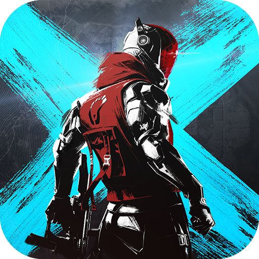

BloodStrike
Informacion acerca del juego
Blood Strike es un videojuego de disparos en primera persona (FPS) gratuito desarrollado por NetEase Games, diseñado especialmente para dispositivos móviles y PC. Su estilo combina elementos clásicos de los FPS multijugador con un ritmo rápido y acción intensa, muy al estilo de títulos como Call of Duty: Mobile o Counter-Strike, pero con su propia identidad visual y mecánicas adaptadas para móviles.
Caracteristicas
Jugabilidad rápida: Las partidas son cortas y dinámicas, lo que lo hace ideal para sesiones rápidas en móvil.
Modos de juego: Incluye varios modos clásicos como Team Deathmatch, Battle Royale y otros por equipos.
Agentes o personajes jugables: Puedes elegir entre diferentes personajes llamados Strikers, cada uno con habilidades únicas, lo que agrega una capa de estrategia.
Personalización: Amplia gama de armas, skins y mejoras que puedes desbloquear y personalizar.
Gráficos optimizados: Ofrece gráficos atractivos sin requerir un dispositivo de alta gama, lo que lo hace accesible a una amplia audiencia.
Juego en línea: Se centra en partidas PvP (jugador contra jugador), con emparejamiento en tiempo real.
Estilo y Comunidad
Tiene una estética moderna y juvenil, con influencia de shooters clásicos pero adaptado a los gustos actuales.
La comunidad es bastante activa, especialmente en América Latina y Asia, con torneos, clanes y actualizaciones frecuentes.